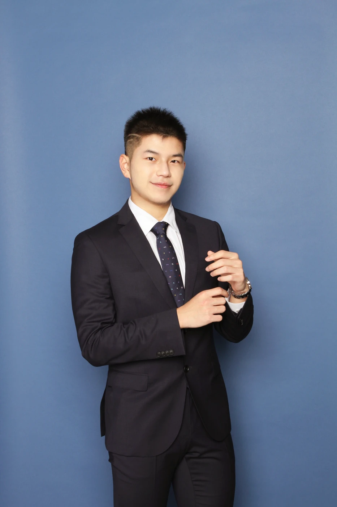

Biomedical Engineering · University of Waterloo
Building Hardware for
Biomedical Applications.
From CAD to a working prototype: mechanical design, electronics, and firmware for medical devices.

About
Idea to prototype,
and everything between.
I’m Louis, a Biomedical Engineering student at the University of Waterloo with a strong interest in medical devices and hands-on engineering. I enjoy taking an idea from CAD to a physical prototype and figuring out how to make it work, especially when the solution isn’t immediately obvious.
My experience spans mechanical design, electronics, and software. I’ve designed and built mechanical systems, worked with PCBs and circuits, written firmware for motors and EMG-based systems, and developed software and web applications. Through these projects, I’ve learned to troubleshoot problems across both hardware and software and to adapt when things don’t work the way I expected.
What I enjoy most about engineering is the freedom to approach a problem in different ways. There isn’t always one right answer, and I like experimenting, building, testing, and refining until I find an approach that works. This portfolio is a collection of projects that reflect that process, from an EMG-controlled prosthetic hand to an ongoing lower-body exoskeleton and the hardware and software I’ve built along the way.
What I work across
Three disciplines.
One system.
Mechanical Design
SolidWorks CAD, 3D printing, and fabrication, from a custom cycloidal gearbox to an aluminum exoskeleton frame.
Electronics
Circuit schematics, custom PCBs, and EMG signal filtering and amplification for biosensor-driven control.
Firmware & Software
C++ on Arduino for motor and EMG control, plus Python simulations, JavaScript apps, and API pipelines.